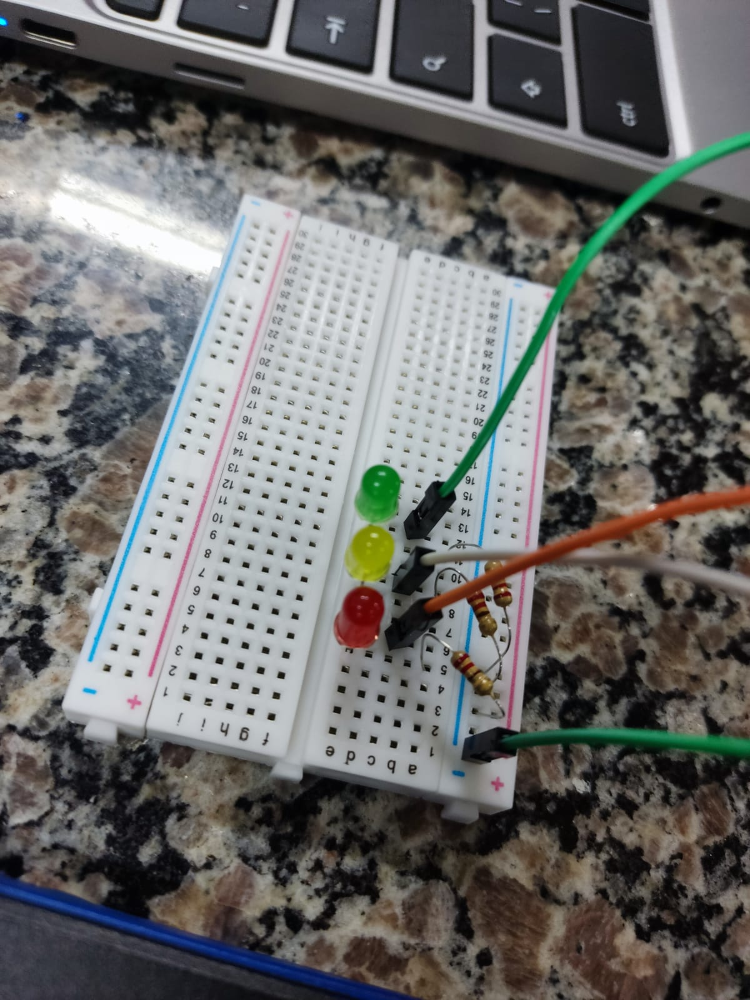
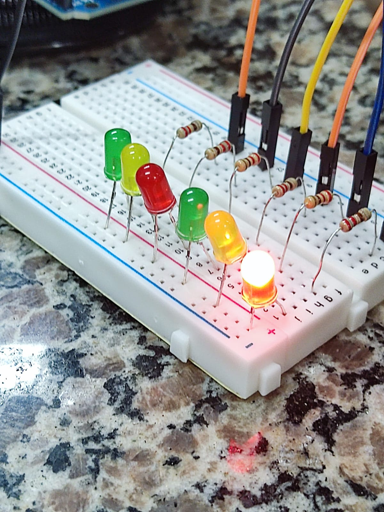

PROJETOS
Semáforo
discrição:
Semáforo é um sinal de trânsito que funciona como um instrumento de controle do tráfego de automóveis e pedestres nas estradas.
semáforo serve para auxiliar os motoristas e pedestres a se locomoverem com cautela nas vias de circulação das cidades.
e como trabalho fizemos um prototpo de um semafaro no arduino  Nosso primeiro projeto foi fazer um semáforo usando leds vermelho, amarelo e verde. Para isso usamos placa onde colocamos os leds e conectamos os fios positivos em frente as perninhas positivas dos leds, um em cada led, e o negativo em um unico lugar onde fica as perninhas negativas dos leds. Fizemos um código no arduino editor e conectamos o cabo do arduino para ler o código.
Push Bottom